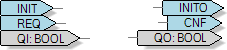
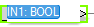

The blocks needed in the composite can be moved from the Solution Explorer using drag & drop, or alternatively by right-clicking the background and selecting FB from the context menu, then selecting the desired FB from the appropriate library.
The fastest way to add blocks from a library is to use shortcut Ctrl-W, while the focus is on the editor.
This editor is also used to create CATs, because the composition of a CAT and a Composite Function block basically is the same, however the CAT also has HMI functionality.
To open the composite function block editor, either:
In the Solution Explorer, double-click on a Composite function block to open it, then click on the Composite sub-tab; or
Open a Container function block, then click on the Composite sub-tab.
When you right click the editor, the following commands are available:
|
Command |
Description |
|---|---|
| Show in Solution Explorer |
Shows the Composite function block that is currently worked on in Solution Explorer, by highlighting it blue. |
| FB |
To insert function blocks; choose the desired function block from an available library, shown via sub context menu. After navigating to the corresponding library, the available blocks of the corresponding library are offered for selection. |
| Adapter |
To insert adapter function blocks; choose the desired function block from an available library, shown via sub context menu |
| Frame |
Opens a sub context menu to insert frames or comments. |
| Attributes... |
Opens dialog Attribute
NOTE: This entry is available only if an appropriate function block has been inserted in the Composite.
|
| Redraw connections |
After moving the position of one or several connections between function blocks, click Redraw connections to return the connections to their default position, i.e., the position EcoStruxure Automation Expert automatically drew when you first created connections between function blocks. |
Drag the connection lines between the interfaces of the blocks, as follows:
|
Step |
Description |
|---|---|
|
1 |
Bring the mouse pointer to the corresponding connecting point |
|
2 |
The arrow turns into a hand |
|
3 |
Holding down the mouse key, drag the link to the corresponding connecting point |
|
alternatively |
|
|
1 |
Right-click on an interface |
|
2 |
Select Routing Linker from context menu |
|
3 |
The connection line clings to the cursor and can be dragged to the corresponding interface |
|
or 2a |
Select Connections... from context menu |
|
3a |
Select corresponding interface out of the drop down list or insert name in the space |
Event connections are displayed blue, variable connections grey.
If an existing connection is clicked, it is highlighted in red to make its course easier to discern. In this state, you can touch the connection to the points highlighted in green and move it to other interfaces.
To delete a connection, select it and then press the Del-key.
Frame is a graphical component. You can combine function blocks to groups within a frame to gain a better overview.
Number, name and type of inputs and outputs depend on how the interfaces of the function block have been configured with the interface editor. When creating a new function block, some interfaces are created by default. Use the Interface editor to adapt the interfaces as needed.

Redundant ports can also be deleted from Composite Function block Editor directly by selecting them and delete them via 'Del'-key.
New ports for the composite can also be created from this view, without changing to the interface editor before. A context menu opens by a right-click on the respective port of a function block within the composite. The command Add input (or Add output, depending on which port you have selected) creates a new port at the composite, which is shown in form of an arrow icon within the composite. A more detailed description of the context menu you will find below.
The port name or data type can also be edited directly from within this view:

The following options are possible:
change solely the name of the connection: by typing a name without the following data type, the name is changed, while the existing data type remains unchanged.
minor changes of the existing name or type: by clicking in the text field you can customize the existing entry individually.
edit name and type anew: type in the complete name and the desired data type (separated by colon).
Right click on a FB port to open a context menu with the following commands:
|
Command |
Description |
|---|---|
| Add Constant |
The selected data input can be assigned a constant. (See also System Editor context menu.) |
| Add Input |
As mentioned in note above, a new input for the composite can be created using this command directly in composite editor without having to switch to the Interface editor before. |
| Routing Linker |
See Watch. |
| Connections... |
See Watch. |
| Add Output |
This command appears when you open the above-mentioned context menu while an output is selected. It serves to directly create a new output for the composites, without the additional need to change the interface editor for this. |